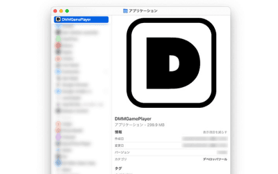
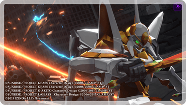

DMMGAMES 中文玩家入门：PC 启动器装完就能玩的 5 步实战
DMMGAMES 默认日语界面，中文玩家从零装 PC 启动器到切换繁体中文、完善资料、下载游戏，全程不翻墙也不折腾，跟着做一次就上手。
这篇教程带你从零把 DMMGAMES 的 PC GAME PLAYER 装好、切到中文、完善账号、下载第一款游戏——做完这 5 步，你就能在桌面端畅玩舰娘、赛马娘、碧蓝档案这些 DMM 独占 IP 了。
准备：你需要什么
动手之前确认三样东西，缺哪样先补：
- 系统：Windows 10/11 或 macOS 11 及以上，DMMGAMES 启动器不支持 32 位 Windows 和老版本 macOS。
- DMM 账号：还没有的话先去注册一个，邮箱 + 密码就能搞定，注册时填真实出生年月日（后面改不了，年满 18 岁才能解锁全部内容分区）。
- 磁盘空间：启动器本体不大，但游戏本体动辄几个 G，预留至少 20GB 比较从容。
第一步：下载并安装 PC GAME PLAYER
DMMGAMES官网 没有上 Steam 或 Epic，启动器只能从它的官方渠道拿。Windows 用户走下面这个流程：
- 打开浏览器，从官方下载入口进入 PC GAME PLAYER 下载页面，页面顶部有个显眼的蓝色「ダウンロード（下载）」按钮，点它，几秒钟就能拿到一个大约 60MB 的安装包。
- 双击安装包，Windows SmartScreen 可能会弹警告——这是因为 DMM 不是微软认证的常规软件，点「更多信息」→「仍要运行」就行。
- 安装向导一路「下一步」，默认装在 C 盘 Program Files 目录，想换位置直接改路径。

Mac 用户的流程基本一致：下载 .dmg 安装包 → 拖进「应用程序」文件夹 → 首次启动时系统会提示安全限制，去「系统设置 → 隐私与安全性」里点「仍要打开」即可。

安装完成后桌面或开始菜单会出现一个 DMMGAMES 图标，双击它启动。
第二步：登录并把界面切成繁体中文
第一次打开启动器，默认界面是日语——别急着研究菜单，先把语言切了：
- 点右上角的地球图标（或显示「日本語」的文字按钮），弹出一个下拉菜单。
- 菜单里有三个选项：日本語-ja、English-en、繁體中文-zh，直接选「繁體中文-zh」。
- 启动器会自动刷新，所有按钮、标签、设置项全部变成繁体中文。
切一次就记住了，以后不管在 PC、手机还是网页版上用同一个账号登录，都会自动继承这个语言偏好。付费区和 FANZA GAMES 的界面不会跟着免费区一起切，这是 DMM 的有意设计，免费区的全部内容正常显示繁体中文。如果后续想了解 FANZA GAMES 分区的解锁条件和完整说明，可以去DMMGAMES文档翻一下，里面有专门的分区指南和详细排障清单。
第三步：花 3 分钟完善个人资料
启动器里点右上角头像，选「我的页面」跳转到 DMM 个人资料页。这个页面是账号级别的，PC / 手机 / 网页三端共用。
重点检查三件事：
- 昵称：注册时系统会给一个临时值，在「ニックネーム」字段旁边点编辑图标改成你想要的名字，最多 15 字符，日文字母、汉字、英文、数字都行。
- 出生年月日：注册时填过了，在「プロフィール情報」区块复核一下是否正确。年满 18 岁才能看到 FANZA GAMES 分区，填错了要联系客服才能改，官方不提供自助修改通道。
- 通知偏好：到「お知らせ設定」区块，只留游戏活动相关的通知，其他邮件轰炸类的关掉就清静了。

第四步：浏览游戏库并下载第一款游戏
切完中文、资料也完善了，现在启动器主界面看起来应该像这样——左侧是分类导航（免费游戏、推荐、排行榜、事前登录），右侧是游戏卡片网格：
- 左侧导航先点「免费游戏」，里面有舰娘、赛马娘 Pretty Derby、碧蓝档案等多款 F2P 大作，不需要充钱就能玩。
- 看到感兴趣的游戏卡片直接点进去，进入游戏详情页，点「下载」按钮。
- 下载会在启动器后台进行，进度条在主界面底部可以看到。下载完成后「下载」按钮会变成「开始游戏」。
第五步：首次启动游戏并进入
点「开始游戏」，启动器会先做一个几秒钟的环境检查（DirectX、显卡驱动、VC++ 运行库这些），然后自动拉起游戏。如果游戏需要额外的数据更新，会在这一步后台下载，等进度条走完自动进入。
舰娘这类页游会在浏览器里打开一个新标签页，赛马娘和碧蓝档案这类客户端游戏则在独立窗口运行——两种形态 DMMGAMES 都支持，启动器统一管理下载和启动。
三个新手最容易翻车的地方
翻车点一：Android 手机装不了 STORE APP。 DMM GAMES STORE 的 Android 版没上 Google Play，必须从官网直接下载 APK。Android 8.0 及以上的手机下载后点安装会被系统拦住，要在设置里给下载这个 APK 的浏览器单独开「允许安装未知应用」开关——注意是按来源授权，Chrome 下的 APK 就要在 Chrome 的应用信息里开，换了浏览器要重新授权。
翻车点二：启动器白屏或加载慢。 DMM 的服务器在日本，国内直连偶尔会抖动。先试试切 Wi-Fi 或换个运营商的移动数据，不行就把启动器完全关掉（右下角托盘右键退出）再重新打开。如果是 DMM 服务器维护，启动器会弹出公告提示，等几小时再开就行。
翻车点三：付费游戏购买页面还是日语。 这不是你没切语言——DMMGAMES 付费区面向日本本地用户，没有做国际化，购买流程、内购界面、下载页面全是日语。免费区全部内容可以正常切繁体中文，付费区只能硬着头皮看日语或用浏览器翻译插件辅助。
接下来还能玩什么
PC 启动器跑通之后，可以去 DMM GAMES STORE 的手机端装一下——同一个账号、同一个游戏库，手机上能接着 PC 的进度玩。赛马娘和碧蓝档案都支持跨平台存档同步，出门用手机挂机、回家用 PC 刷本，是不少玩家的日常节奏。
舰娘（舰队 Collection）、刀剣乱舞这类老牌页游则不用下载客户端，直接在 DMMGAMES 网页版登录就能玩——和启动器账号完全互通，存档在服务器上，任何设备登录都能续上。这份教程用到的分区细节和常见排障清单也在三个仓库里长期更新着：GitHub、Gitee 和 GitCode，国内访问优先走 Gitee 或 GitCode 更顺畅。